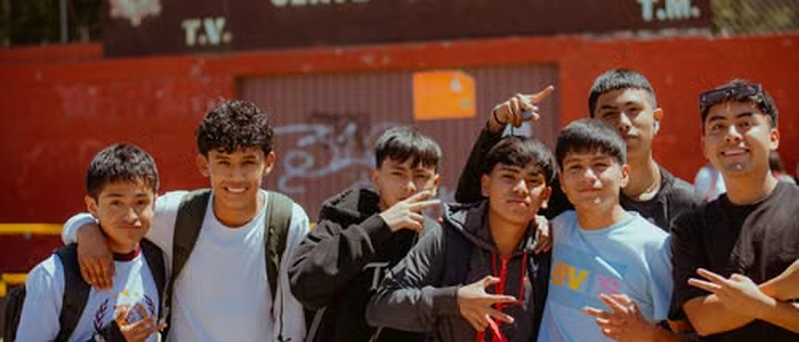
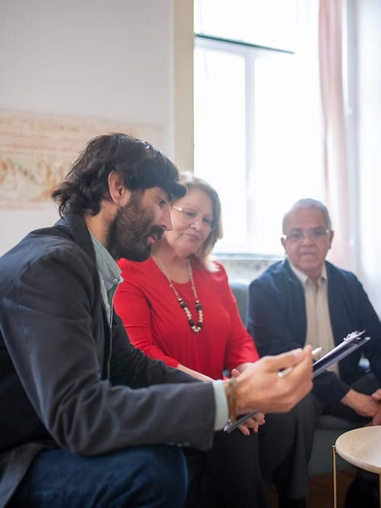
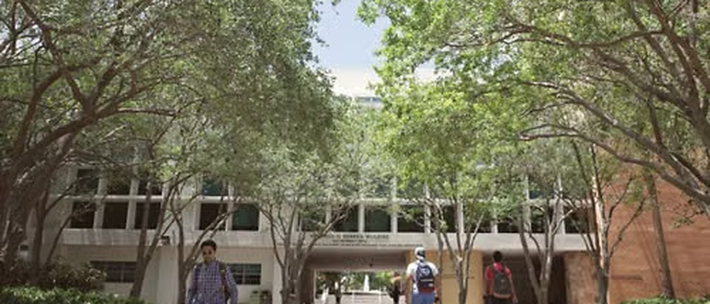
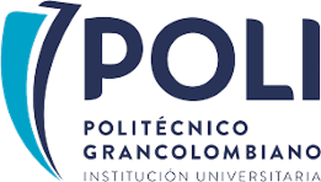
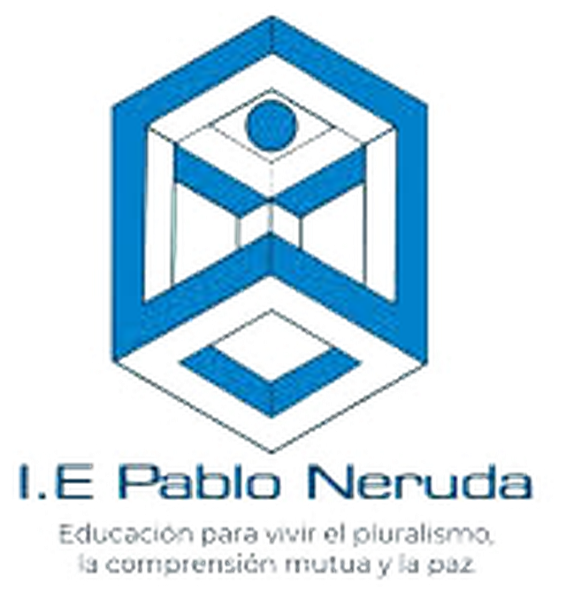
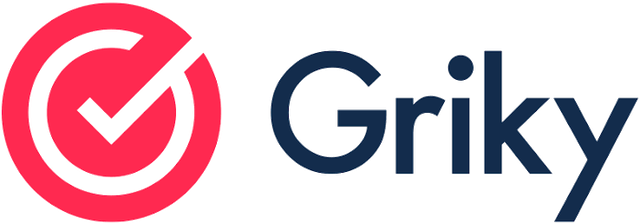
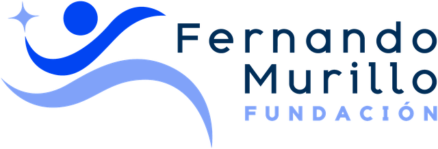
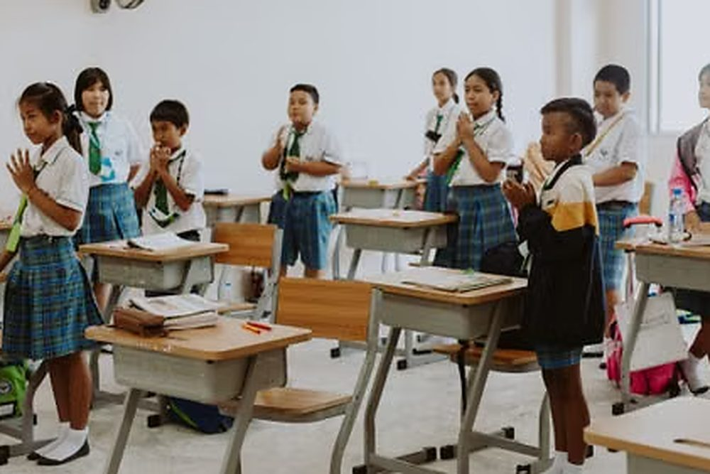
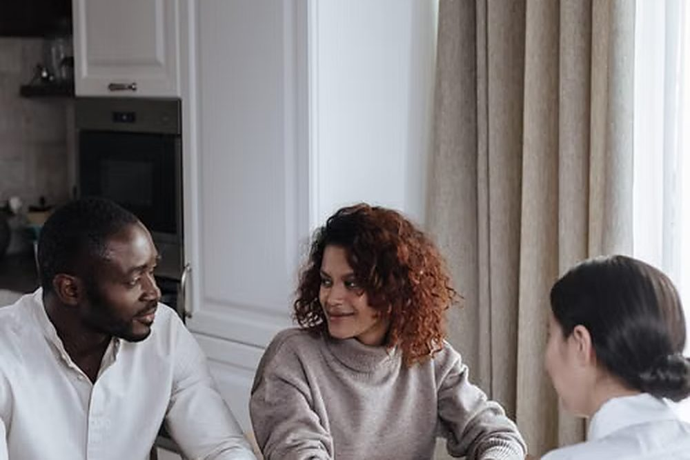

Fundación Red Conecta
Construyendo el puente entre el talento y el futuro profesional.
Identificamos estudiantes de grado once en instituciones educativas públicas, gestionamos con universidades aliadas los apoyos que hacen viable su ingreso, y los acompañamos hasta que se gradúan.

assets/fotos/apertura.jpg2400 × 1030 px · horizontalQuiénes somos

assets/fotos/equipo.jpg1200 × 1600 px · verticalTrabajamos sobre el tramo donde se pierde a la mayoría: los últimos meses de grado once y los primeros semestres de educación superior.
Fundación Red Conecta promueve el acceso, la permanencia y la proyección educativa y laboral de estudiantes con talento y oportunidades económicas limitadas. En los colegios públicos hay jóvenes con capacidad de sobra para una carrera universitaria que nunca llegan a matricularse, no por falta de mérito, sino por falta de ruta.
Lo que no hacemos
La Fundación no imparte educación formal ni no formal, y no otorga títulos ni certificaciones académicas. Nuestra actuación se enmarca en la educación informal: orientación, mentoría, acompañamiento y seguimiento, complementarios a los procesos de las instituciones legalmente autorizadas. No reemplazamos funciones académicas, administrativas ni de bienestar de las universidades aliadas.
Nuestros valores
Equidad y mérito
Nivelamos el campo de juego para que el esfuerzo sea el único límite del éxito.
Acompañamiento
No solo abrimos puertas; caminamos junto al estudiante en cada paso del proceso.
Transparencia
Solidez institucional que garantiza que cada inversión social genere un impacto real.
El talento está repartido de forma pareja. Las oportunidades no.
Fundación Red Conecta
Cómo operamos
Cada etapa tiene un objetivo, una salida mínima verificable y una puerta de decisión.
Ese diseño permite documentar por qué entra cada estudiante al programa y sostener el criterio cuando el proceso se amplía a más colegios.

assets/fotos/proceso.jpg2400 × 1030 px · horizontalAlianzas
Las alianzas se estructuran como pilotos acotados, con cupos definidos, indicadores acordados y reportes periódicos. Preferimos empezar pequeño y demostrar resultados antes de ampliar.
Universidades e instituciones de educación superior
Sobre un número acordado de beneficios de acceso: becas, cupos priorizados, descuentos, exenciones o apoyos de bienestar, administrados siempre por la institución bajo sus políticas internas.
- Candidatos con diagnóstico previo, perfilamiento psicométrico y evaluación socio-contextual documentada.
- Acompañamiento académico y socioeducativo durante toda la vigencia del convenio.
- Identificación y gestión de alertas tempranas de deserción.
- Reportes de permanencia, rendimiento, alertas atendidas y satisfacción.
- Un número definido de beneficios de acceso y sus condiciones de renovación.
- Un enlace institucional con quien coordinar admisión y seguimiento.
- Claridad sobre requisitos, calendarios y costos indirectos del programa.
- Una evaluación conjunta al cierre de cada periodo.
Instituciones educativas de media
Intervenimos en grado once durante los últimos tres meses del calendario escolar, con un taller de doce semanas que incluye medición de entrada, trabajo experiencial y medición de salida.
- Diseño y ejecución completa del taller y sus instrumentos.
- Informe agregado de resultados para la institución.
- Gestión de la ruta de continuidad con universidades aliadas.
- Recomendaciones para fortalecer la transición a educación superior.
- Autorización, espacio y horario para las sesiones.
- Un enlace institucional en orientación o coordinación académica.
- Apoyo en la convocatoria y en la comunicación con acudientes.
- Gestión de los consentimientos informados requeridos.
Nuestros aliados
Hoy sostenemos cuatro alianzas activas, entre instituciones de educación superior, educación media y organizaciones que complementan el acompañamiento. Si desea conocer el alcance de cada convenio y sus resultados, escríbanos y le compartimos el informe correspondiente.

assets/logos/politecnico-grancolombianoSVG o PNG transparente
assets/logos/ie-pablo-nerudaSVG o PNG transparente
assets/logos/grikySVG o PNG transparente
assets/logos/fundacion-fernando-murilloSVG o PNG transparenteCírculo de Contribución y Experiencia
Recibir, aprender, contribuir.
Quien recibe apoyo también aporta. No como condición de pago, sino como parte de su formación. Cada estudiante vinculado acuerda un plan individual de contribución según sus habilidades: diseño, comunicación y redes, apoyo logístico, soporte administrativo, tutoría a otros estudiantes o creación de recursos.
El plan tiene entregables, tiempos razonables, criterios de calidad y retroalimentación periódica, de modo que produzca experiencia demostrable para su hoja de vida.
Límites explícitos del modelo
- La contribución no constituye relación laboral ni sustituye a personal de la Fundación.
- No es una sanción ni una contraprestación económica.
- Se reduce o reprograma en semanas de parciales y finales.
- Si interfiere con el desempeño académico o el bienestar, el plan se ajusta o se suspende.
Protección de datos
Recolectamos y tratamos datos personales conforme a la Ley 1581 de 2012 y al Decreto 1377 de 2013. La participación de cualquier estudiante requiere consentimiento informado del acudiente, y la información individual se comparte con instituciones aliadas únicamente con autorización previa y bajo el principio de minimización de datos.
Para consultar, actualizar o suprimir sus datos, o para solicitar copia de nuestra política de tratamiento de la información, escriba a fundacionredconecta@gmail.com.
El programa
Doce semanas de taller, visitas a los hogares y el ingreso a la universidad.

assets/fotos/galeria-1.jpg1200 × 1500 px · vertical
assets/fotos/galeria-3.jpg1200 × 1500 px · verticalHablemos
Si representa a una universidad, a una institución educativa o a una organización que trabaja con población escolar, una reunión de cuarenta minutos basta para saber si tiene sentido seguir.
fundacionredconecta@gmail.com